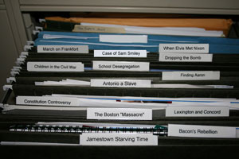

This is an archived copy of History Matters, provided by the Roy Rosenzweig Center for History and New Media. To explore this content in a new interface, visit Who Built America?.

H.S.I.: Historical Scene Investigation
http://web.wm.edu/hsi/?svr=www
Created and maintained by the College of William and Mary School of Education, the University of Kentucky School of Education, and the Library of Congress Teaching with Primary Sources Program.
Reviewed Jan. 19–24, 2013.
The Historical Scene Investigation (HSI) project helps social studies teachers connect their students to the increasing cache of digitized primary sources available for historical investigation. HSI places students in the role of “historical investigator” to “crack” assigned cases from various points in American history. This investigative model is one approach to introducing students to and engaging them in the work of historians, a current trend in history education. Such work with students requires careful forethought and anticipation of stumbling blocks, and HSI does an excellent job of providing a model that keeps students on track while also allowing teachers the flexibility to modify or extend investigations to suit specific curricular needs.

The HSI home page leads students to a cleverly designed “case file” that is literally an image of an open filing cabinet with links embedded in each folder. Investigations run the gamut of American history from the Jamestown colony to the 1970s, though there is more emphasis on the colonial and early national eras. Each case file leads the student through a four-step process, the first of which is the “Becoming a Detective” phase that immerses students in the role of historical investigator, sets the stage for investigation, and ends with the overarching task or question at hand. The ensuing “Investigating the Evidence” phase includes primary sources and hyperlinks to images or multimedia files that serve as clues to follow in the “Searching for Clues” phase. Students download investigation logs that pose descriptive questions similar to what many would call “sourcing” questions, in that they ask students to consider the origination, audience, and context of each source. A second group of analytical questions guides students in locating and citing specific evidence that will lead them closer to cracking the case. The inclusion of the analytical questions is a significant point in favor of the HSI Web site, since students typically need guidance beyond sourcing questions when they are piecing together historical source evidence for a specific purpose.
Students return to the question posed at the beginning of the investigation to demonstrate their newly acquired historical understanding in the “Cracking the Case” phase. The final product is generally a brief historical narrative or argument based on the evidence, again replicating the work of the historian. Some of the cases prompt students simply to describe what they think actually happened at the time, while others add an additional element of historical argument or judgment by asking participants to adopt and defend a position. This phase is probably the least creative aspect of the HSI model, though it would be relatively easy for teachers to substitute other projects or forms of alternative assessment.
The Historical Scene Investigation creators have achieved their primary goal of replicating the work of historians by researching, organizing, and presenting thoughtfully chosen and balanced primary-source material in a convenient format that incorporates recent trends in history education. The investigative scope can be very specific at times: the investigation, for example, into the disappearance of Aaron, a slave living in 1770s Virginia. With that in mind, HSI will likely prove most useful for teachers who recognize the benefits of using primary sources to help students develop understanding of broader historical context, patterns, and forces, in addition to answering specific historical questions.
Jason L. Endacott
University of Arkansas
Fayetteville, Arkansas